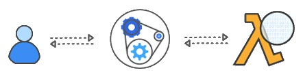

What is a chatbot?
As virtual agents become more intelligent, performant and cost effective, they will start to permeate into our personal and work life.
Building a chatbot with Amazon Web Service (AWS):

Users interact with a chatbot via various channels:
|
Amazon |
Amazon |
|---|
An intent represents an action that the user wants to perform. You create a bot to support one or more related intents. For example, you might create a bot that orders pizza and drinks.
Intents contain Sample utterances specifying how a user might convey the intent. For example, a user might say "Can I order a pizza please" or "I want to order a pizza".
x = 5
y = "John"
a = 33
b = 200
if b > a:
print("b is greater than a")
thislist = ["apple", "banana", "cherry"]
thislist[1] = "blackcurrant" # Change the second item
thisdict = {
"apple": "green",
"banana": "yellow",
"cherry": "red"
}
thisdict["apple"] = "red" # Change apple color to red
def my_function():
print("Hello from a function")
my_function() # calling a function
import datetime
from dateutil.parser import parse
def lambda_handler(event, context):
# get the current intent
intent_name = event['currentIntent']['name']
# Dispatch to your bot's intent handlers
if intent_name == 'LunchMenuItem':
return get_menu_handler(event)
# Event Handler for get menu intent.
def get_menu_handler(event):
# get date
date = event['currentIntent']['slots']['Day']
# get the day of week from the date
day_of_week = parse(date).weekday()
# get the menu item for the meal and day of week
menu_item = get_menu_item(day_of_week)
return create_response(event, menu_item)
# Returns the menu item for a specific meal and day of week
def get_menu_item(day_of_week):
# menu is represented as a dictinary
menu = ['salad', 'pizza', 'pasta', 'soup', 'hamburger', 'sushi', 'pizza']
return menu[day_of_week]
# Generates a valid response for AWS Lex
def create_response(event, menu_item):
return {
'sessionAttributes': event['sessionAttributes'],
'dialogAction':{
'type':'Close',
'fulfillmentState': 'Fulfilled',
'message':{
'contentType':'PlainText',
'content':menu_item
}
}
}
{
"currentIntent": {
"slots": {
"slotDay": "2030-11-08"
},
"name": "LunchMenuItem",
"confirmationStatus": "None"
},
"bot": {
"alias": "$LATEST",
"version": "$LATEST",
"name": "MakeAppointment"
},
"userId": "John",
"invocationSource": "DialogCodeHook",
"outputDialogMode": "Text",
"messageVersion": "1.0",
"sessionAttributes": {}
}
import datetime
from dateutil.parser import parse
def lambda_handler(event, context):
# get the current intent
intent_name = event['currentIntent']['name']
# Dispatch to your bot's intent handlers
if intent_name == 'GetMenuIntent':
return get_menu_item_handler(event)
# Event Handler for get menu intent.
def get_menu_item_handler(event):
# get the meal and date
meal = event['currentIntent']['slots']['slotMeal']
date = event['currentIntent']['slots']['slotDay']
# get the day of week from the date
day_of_week = parse(date).weekday()
# get the menu item for the meal and day of week
menu_item = get_menu_item(meal, day_of_week)
return create_response(event, menu_item)
# Returns the menu item for a specific meal and day of week
def get_menu_item(meal, day_of_week):
# menu is represented as a dictinary
menu = { 'breakfast':['cereal', 'fruit bowl', 'eggs', 'pb&j', 'ham sandwich', 'cereal', 'cereal'],
'lunch':['salad', 'pizza', 'pasta', 'soup', 'hamburger', 'sushi', 'pizza'],
'dinner':['steak', 'salmon', 'spaghetti', 'fish and chips', 'chicken', 'turkey', 'ceaser salad']
}
return menu[meal][day_of_week]
# Generates a valid response for AWS Lex
def create_response(event, menu_item):
return {
'sessionAttributes': event['sessionAttributes'],
'dialogAction':{
'type':'Close',
'fulfillmentState': 'Fulfilled',
'message':{
'contentType':'PlainText',
'content':menu_item
}
}
}
{
"currentIntent": {
"slots": {
"slotDay": "2030-11-08",
"slotMeal": "dinner"
},
"name": "GetMenuIntent",
"confirmationStatus": "None"
},
"bot": {
"alias": "$LATEST",
"version": "$LATEST",
"name": "MakeAppointment"
},
"userId": "John",
"invocationSource": "DialogCodeHook",
"outputDialogMode": "Text",
"messageVersion": "1.0",
"sessionAttributes": {}
}